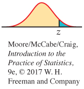
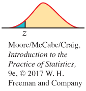
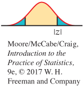

6.2 6.2 Tests of Significance
361
When you complete this section, you will be able to:
• Outline the four steps common to all tests of significance.
• Formulate the null and alternative hypotheses of a significance test.
• Describe a common form for the test statistic in terms of the parameter estimate, its standard deviation, and the hypothesized value.
• Define what a P-value is and explain whether a small P-value provides evidence for or against the null hypothesis.
• Draw a conclusion from a test of significance based on the test’s P-value and significance level α.
• Describe the relationship between a level α two-sided significance test for μ and the 1 − α confidence interval.
The confidence interval is appropriate when our goal is to estimate population parameters. The second common type of inference is directed at a quite different goal: to assess the evidence provided by the data in favor of some claim about the population parameters.
The reasoning of significance tests
A significance test is a formal procedure for comparing observed data with a hypothesis whose truth we want to assess. The hypothesis is a statement about the population parameters. The results of a test are expressed in terms of a probability that measures how well the data and the hypothesis agree. We use the following examples to illustrate these concepts.
EXAMPLE 6.8
Scholarship amount by borrower status. One purpose of Sallie Mae’s annual study described in Example 6.4 (page 350) is to allow comparisons of different subgroups. For example, in the latest report, 980 of the 1593 participants (61.5%) did not borrow any money to pay for college. The average scholarship amount among these participants was $3925. The average scholarship among those who did borrow was $4350. The difference of $425 is fairly large, but we know that these numbers are estimates of the population means. If we took different samples, we would get different estimates.
Can we conclude from these data that the average scholarship amounts in these two groups are different? One way to answer this question is to compute the probability of obtaining a difference as large or larger than the observed $425 assuming that, in fact, there is no difference in the population means. This probability is 0.23. Because this probability is not particularly small, we conclude that observing a difference of $425 is not very surprising when the population means are equal. The data do not provide enough evidence for us to conclude that the average scholarship amount for borrowers and non-borrowers differ.
Here is an example with a different conclusion.
362
EXAMPLE 6.9
Parent income contribution by school type. Sallie Mae’s study also reports that the parents’ current income contribution among undergraduates going to a four-year public or four-year private college. The parents’ contribution averages $4444 among undergraduates at public colleges, while it is $6083 among undergraduates at private schools. Do parents pay more of their current income for undergraduates going to private schools? The observed difference is $1639, but as we learned in the previous example, an observed difference in means is not necessarily sufficient for us to conclude that the population means are different.
Again, we answer this question with a probability calculated under the assumption that there is no difference in the population means. The probability is 0.0003 of observing a difference in mean contributions that is $1639 or more when there really is no difference. Because this probability is so small, we have sufficient evidence in the data to conclude that the average current income contribution of parents is higher for undergraduates going to a private school than undergraduates going to a public school.
What are the key steps in these examples?
• We started each with a question about the difference between two means. In Example 6.8, we compare borrowers with nonborrowers. In Example 6.9, we compare undergraduates attending private and public four-year colleges. In both cases, we ask whether or not the data are compatible with “no difference,” that is, a difference of $0.
• Next we compared the difference given by the data, $425 in the first case and $1639 in the second, with the value assumed in the question, $0.
• The results of the comparisons are probabilities, 0.23 in the first case and 0.0003 in the second.
The 0.23 probability is not particularly small, so we have limited evidence to question the possibility that the true difference is zero. In the second case, however, the probability is very small. Something that happens with probability 0.0003 occurs only about 3 times out of 10,000. In this case we have two possible explanations:
1. We have observed something that is very unusual.
2. The assumption that underlies the calculation, no difference in mean balance, is not true.
Because this probability is so small, we prefer the second conclusion: the average current income contribution from parents for undergraduates attending public colleges and for undergraduates attending private colleges is different, with the private school group contribution higher than that of the public school group.
The probabilities in Examples 6.8 and 6.9 are measures of the compatibility of the data (a difference in means of $425 and $1639) with the null hypothesis that there is no difference in the true means. Figure 6.7 and 6.8 compare the two results graphically. For each, a Normal curve centered at 0 is the sampling distribution. You can see from Figure 6.7 that we should not be particularly surprised to observe the difference $425, but the difference $1639 in Figure 6.8 is clearly an unusual observation. We will now consider some of the formal aspects of significance testing.
363
Stating hypotheses
In Examples 6.8 and 6.9, we asked whether the difference in the observed means is reasonable if, in fact, there is no difference in the population means. To answer this, we begin by supposing that the statement following the “if” in the previous sentence is true. In other words, we suppose that the true difference is $0. We then ask whether the data provide evidence against the supposition we have made. If so, we have evidence in favor of an effect (the means are different) we are seeking. Often, the first step in a test of significance is to state a claim that we will try to find evidence against.
NULL HYPOTHESIS
The statement being tested in a test of significance is called the null hypothesis. The test of significance is designed to assess the strength of the evidence against the null hypothesis. Usually, the null hypothesis is a statement of “no effect” or “no difference.”
We abbreviate “null hypothesis” as H0. A null hypothesis is a statement about the population parameters. For example, our null hypothesis for Example 6.8 is
H0: there is no difference in the population means
364
or equivalently,
H0: the difference in population means is zero
Note that the null hypothesis refers to the population means for all undergraduates, including those for whom we do not have data.
It is convenient also to give a name to the statement we hope or suspect is true instead of H0. This is called the alternative hypothesisalternative hypothesis and is abbreviated as Ha. In Example 6.8, the alternative hypothesis states that the means are different. We write this as
Ha: the population means are not the same
or equivalently,
Ha: the difference in population means is not zero

Hypotheses always refer to some populations or a model, not to a particular outcome. For this reason, we must state H0 and Ha in terms of population parameters.
Because Ha expresses the effect that we hope to find evidence for, we will sometimes begin with Ha and then set up H0 as the statement that the hoped-for effect is not present. Stating Ha, however, is often the more difficult task. It is not always clear, in particular, whether Ha should be one-sided or two-sidedone-sided or
two-sided alternatives, which refers to whether a parameter differs from its null hypothesis value in a specific direction or in either direction.

The alternative hypothesis should express the hopes or suspicions we bring to the data. It is cheating to first look at the data and then frame Ha to fit what the data show. If you do not have a specific direction firmly in mind in advance, you must use a two-sided alternative. Moreover, some users of statistics argue that we should always use a two-sided alternative.
USE YOUR KNOWLEDGE
Question 6.38
6.38 Dining court survey. The dining court closest to your university residence has been redesigned. A survey is planned to assess whether or not students think that the new design is an improvement. It will contain eight questions; a seven-point scale will be used for the answers, with scores less than 4 favoring the previous design and scores greater than 4 favoring the new design (to varying degrees). The average of these eight questions will be used as the student’s response. State the null and alternative hypotheses you would use for examining whether or not the new design is viewed more favorably.
Question 6.39
6.39 DXA scanners. A dual-energy X-ray absorptiometry (DXA) scanner is used to measure bone mineral density for people who may be at risk for osteoporosis. One researcher believes that her scanner is not giving accurate readings. To assess this, the researcher uses an object called a “phantom” that has known mineral density μ = 1.4 grams per square centimeter. The researcher scans the phantom 10 times and compares the sample mean reading with the theoretical mean μ using a significance test. State the null and alternative hypotheses for this test.
Test statistics
We will learn the form of significance tests in a number of common situations. Here are some principles that apply to most tests and that help in understanding these tests:
• The test is based on a statistic that estimates the parameter that appears in the hypotheses. Usually, this is the same estimate we would use in a confidence interval for the parameter. When H0 is true, we expect the estimate to take a value near the parameter value specified by H0. We call this specified value the hypothesized value.
• Values of the estimate far from the hypothesized value give evidence against H0. The alternative hypothesis determines which directions count against H0.
365
• To assess how far the estimate is from the hypothesized value, standardize the estimate. In many common situations the test statistic has the form
A test statistictest statistic measures compatibility between the null hypothesis and the data. We use it for the probability calculation that we need for our test of significance. It is a random variable with a distribution that we know.
Let’s return to our comparison of the scholarship amount among borrowers and nonborrowers and specify the hypotheses as well as calculate the test statistic.
EXAMPLE 6.10
Average scholarship amount of borrowers and nonborrowers: The hypotheses. In Example 6.8, the hypotheses are stated in terms of the difference in the average scholarship amount between borrowers and nonborrowers:
H0: there is no difference in the population means
Ha: there is a difference in the population means
Because Ha is two-sided, large values of both positive and negative differences count as evidence against the null hypothesis.
We can also state the null hypothesis as H0: the true mean difference is 0. This statement makes it more clear that the hypothesized value for this comparison of average scholarship amounts is 0.
EXAMPLE 6.11
Average scholarship amount of borrowers and nonborrowers: The test statistic. In Example 6.8, the estimate of the difference is $425. Using methods that we will discuss in detail later, we can determine that the standard deviation of the estimate is $353. For this problem the test statistic is
For our data,
We have observed a sample estimate that is one and one-fifth standard deviations away from the hypothesized value of the parameter.
Normal distribution, p. 56
Because the sample sizes are sufficiently large for us to conclude that the distribution of the sample estimate is approximately Normal, the standardized test statistic z will have approximately the N(0, 1) distribution. We will use facts about the Normal distribution in what follows.
P-values
If all test statistics were Normal, we could base our conclusions on the value of the z test statistic. In fact, the Supreme Court of the United States has said that “two or three standard deviations” (z = 2 or 3) is its criterion for rejecting H0 (see Exercise 6.44 on page 370), and this is the criterion used in most applications involving the law. But because not all test statistics are Normal, we use the language of probability to express the meaning of a test statistic.
366
A test of significance finds the probability of getting an outcome as extreme or more extreme than the actually observed outcome. “Extreme” means “far from what we would expect if H0 were true.” The direction or directions that count as “far from what we would expect” are determined by Ha and H0.
P-VALUE
The probability, assuming H0 is true, that the test statistic would take a value as extreme or more extreme than that actually observed is called the P-value of the test. The smaller the P-value, the stronger the evidence against H0 provided by the data.
The key to calculating the P-value is the sampling distribution of the test statistic. For the problems we consider in this chapter, we need only the standard Normal distribution for the test statistic z.
In Example 6.8, we want to know if the average scholarship amount for borrowers differs from the average scholarship amount for non-borrowers. The difference we calculated based on our sample is $425, which corresponds to 1.20 standard deviations away from zero—that is, z = 1.20. Because we are using a two-sided alternative for this problem, the evidence against H0 is measured by the probability that we observe a value of Z as extreme or more extreme than 1.20.
EXAMPLE 6.12
Average scholarship amount of borrowers and nonborrowers: The P-value. In Example 6.11, we found that the test statistic for testing
H0: the true mean difference is 0
versus
Ha: there is a difference in the population means
is
If H0 is true, then z is a single observation from the standard Normal, N(0, 1), distribution. Figure 6.9 illustrates this calculation. The P-value is the probability of observing a value of Z at least as extreme as the one that we observed, z = 1.20. From Table A, our table of standard Normal probabilities, we find
P(Z ≥ 1.20) = 1 − 0.8849 = 0.1151
The probability for being extreme in the negative direction is the same:
P(Z ≤ −1.20) = 0.1151
So the P-value is
P = 2P(Z ≥ 1.20) = 2(0.1151) = 0.2302
367
This is the value that we reported on page 361. There is a 23% chance of observing a difference as extreme as the $425 in our sample if the true population difference is zero. This P-value tells us that our outcome is not particularly extreme. In other words, the data do not provide substantial evidence for us to doubt the validity of the null hypothesis.
USE YOUR KNOWLEDGE
Question 6.40
6.40 Normal curve and the P-value. A test statistic for a two-sided significance test for a population mean is z =2.47. Sketch a standard Normal curve and mark this value of z on it. Find the P-value and shade the appropriate areas under the curve to illustrate your calculations.
Question 6.41
6.41 More on the Normal curve and the P-value. A test statistic for a two-sided significance test for a population mean is z = −1.57. Sketch a standard Normal curve and mark this value of z on it. Find the P-value and shade the appropriate areas under the curve to illustrate your calculations.
Statistical significance
We started our discussion of the reasoning of significance tests with the statement of null and alternative hypotheses. We then learned that a test statistic is the tool used to examine the compatibility of the observed data with the null hypothesis. Finally, we translated the test statistic into a P-value to quantify the evidence against H0. One important final step is needed: to state our conclusion.
We can compare the P-value we calculated with a fixed value that we regard as decisive. This amounts to announcing in advance how much evidence against H0 we will require to reject H0. The decisive value is called the significance levelsignificance level. It is commonly denoted by α (the Greek letter alpha). If we choose α = 0.05, we are requiring that the data give evidence against H0 so strong that it would happen no more than 5% of the time (1 time in 20) when H0 is true. If we choose α = 0.01, we are insisting on stronger evidence against H0, evidence so strong that it would appear only 1% of the time (1 time in 100) if H0 is in fact true.
368
STATISTICAL SIGNIFICANCE
If the P-value is as small or smaller than α, we say that the data are statistically significant at level α.

“Significant” in the statistical sense does not mean “important.” The original meaning of the word is “signifying something.” In statistics, the term is used to indicate only that the evidence against the null hypothesis has reached the standard set by α. For example, significance at level 0.01 is often expressed by the statement “The results were significant (P < 0.01).” Here, P stands for the P-value. The P-value is more informative than a statement of significance because we can then assess significance at any level we choose. For example, a result with P = 0.03 is significant at the α = 0.05 level but is not significant at the α = 0.01 level. We discuss this in more detail at the end of this section.
EXAMPLE 6.13
Average scholarship amount of borrowers and nonborrowers: The conclusion. In Example 6.12, we found that the P-value is
P = 2P(Z ≥ 1.20) = 2(0.1151) = 0.2302
There is an 23% chance of observing a difference as extreme as the $425 in our sample if the true population difference is zero. Because this P-value is larger than the α = 0.05 significance level, we conclude that our test result is not significant. We could report the result as “the data fail to provide evidence that would cause us to conclude that there is a difference in average scholarship amount between borrowers and nonborrowers (z = 1.20, P = 0.23).”
This statement does not mean that we conclude that the null hypothesis is true, only that the level of evidence we require to reject the null hypothesis is not met. Our criminal court system follows a similar procedure in which a defendant is presumed innocent (H0) until proven guilty. If the level of evidence presented is not strong enough for the jury to find the defendant guilty beyond a reasonable doubt, the defendant is acquitted. Acquittal does not imply innocence, only that the degree of evidence was not strong enough to prove guilt.
If the P-value is small, we reject the null hypothesis. Here is the conclusion for our second example.
EXAMPLE 6.14
Parent income contribution by school type: The conclusion. In Example 6.9, we found that the difference in the average parent current income contribution between undergraduates going to a private college versus public college was $1639. Because the cost of tuition at a private college is typically higher than the cost at a public college,14 we had a prior expectation that the parental current income contribution would be higher for undergraduates going to a private college. It is appropriate to use a one-sided alternative in this situation. So, our hypotheses are
369
H0: the true mean difference is 0
versus
Ha: the difference between the average parent income contribution of undergraduates at a private college and public college is positive
The standard deviation is $428 (again, we defer details regarding this calculation), and the test statistic is
= 3.81
Because only positive differences in parental contributions count against the null hypothesis, the one-sided alternative leads to the calculation of the P-value using the upper tail of the Normal distribution. In Table A, the largest z is 3.49. This means that for z = 3.81, P < 0.0002. Using software, we can be more precise. The P-value is
P = P(Z ≥ 3.81)
= 0.0001
The calculation is illustrated in Figure 6.10. There is about a 1-in-10,000 chance of observing a difference as large or larger than the $1639 in our sample if the true population difference is zero. This P-value tells us that our outcome is extremely rare. We conclude that the null hypothesis must be false. Because the observed difference is positive, here is one way to report the result: “The data clearly show that the average parent income contribution for undergraduates at a private college is larger than the average parent income contribution for undergraduates at a public college (z = 3.81, P = 0.0001).”
370
USE YOUR KNOWLEDGE
Question 6.42
6.42 Finding significant z-scores. Consider a two-sided significance test for a population mean.
(a) Sketch a Normal curve similar to that shown in Figure 6.9 (page 367), but find the value z such that P = 0.05.
(b) Based on your curve from part (a), what values of the z statistic are statistically significant at the α = 0.05 level?
Question 6.43
6.43 More on finding significant z-scores. Consider a one-sided significance test for a population mean, where the alternative is “greater than.”
(a) Sketch a Normal curve similar to that shown in Figure 6.10, but find the value z such that P = 0.05.
(b) Based on your curve from part (a), what values of the z statistic are statistically significant at the α = 0.05 level?
Question 6.44
6.44 The Supreme Court speaks. The Supreme Court has said that z-scores beyond 2 or 3 are generally convincing statistical evidence. For a two-sided test, what significance level corresponds to z = 2? To z = 3?
A test of significance is a process for assessing the significance of the evidence provided by data against a null hypothesis. The four steps common to all tests of significance are as follows:
1. State the null hypothesis H0 and the alternative hypothesis Ha. The test is designed to assess the strength of the evidence against H0; Ha is the statement that we will accept if the evidence enables us to reject H0.
2. Calculate the value of the test statistic on which the test will be based. This statistic usually measures how far the data are from H0.
3. Find the P-value for the observed data. This is the probability, calculated assuming that H0 is true, that the test statistic will weigh against H0 at least as strongly as it does for these data.
4. State a conclusion. One way to do this is to choose a significance level α, how much evidence against H0 you regard as decisive. If the P-value is less than or equal to α, you conclude that the alternative hypothesis is true; if it is greater than α, you conclude that the data do not provide sufficient evidence to reject the null hypothesis. Your conclusion is a sentence or two that summarizes what you have found by using a test of significance.
We will learn the details of many tests of significance in the following chapters. The proper test statistic is determined by the hypotheses and the data collection design. We use computer software or a calculator to find its numerical value and the P-value. The computer will not formulate your hypotheses for you, however. Nor will it decide if significance testing is appropriate or help you to interpret the P-value that it presents to you. These steps require judgment based on a sound understanding of this type of inference.
371
Tests for a population mean
Our discussion has focused on the reasoning of statistical tests, and we have outlined the key ideas for one type of procedure. Our examples focused on the comparison of two population means. Here is a summary for a test about one population mean.
We want to test the hypothesis that a parameter has a specified value. This is the null hypothesis. For a test of a population mean μ, the null hypothesis is
H0: the true population mean is equal to μ0
which often is expressed as
H0: μ = μ0
where μ0 is the hypothesized value of μ that we would like to examine.
The test is based on data summarized as an estimate of the parameter. For a population mean this is the sample mean . Our test statistic measures the difference between the sample estimate and the hypothesized parameter in terms of standard deviations of the test statistic:
distribution of sample mean, p. 298
Recall from Chapter 5 that the standard deviation of is . Therefore, the test statistic is
central limit theorem, p. 298
Again recall from Chapter 5 that, if the population is Normal, then will be Normal and z will have the standard Normal distribution when H0 is true. By the central limit theorem, both distributions will be approximately Normal when the sample size is large even if the population is not Normal. We’ll assume that we’re in one of these two settings for now.
Suppose that we have calculated a test statistic z = 1.7. If the alternative is one-sided on the high side, then the P-value is the probability that a standard Normal random variable Z takes a value as large or larger than the observed 1.7. That is,
P = P(Z ≥ 1.7)
= 1 − P(Z < 1.7)
= 1 − 0.9554
= 0.0446
Similar reasoning applies when the alternative hypothesis states that the true μ lies below the hypothesized μ0 (one-sided). When Ha states that μ is simply unequal to μ0 (two-sided), values of z away from zero in either direction count against the null hypothesis. The P-value is the probability that a standard Normal Z is at least as far from zero as the observed z. Again, if the test statistic is z = 1.7, the two-sided P-value is the probability that Z ≤ −1.7 or Z ≥ 1.7. Because the standard Normal distribution is symmetric, we calculate this probability by finding P(Z ≥ 1.7) and doubling it:
P(Z ≤ −1.7 or Z ≥ 1.7) = 2P(Z ≥ 1.7)
= 2(1 − 0.9554) = 0.0892
372
We would make exactly the same calculation if we observed z = −1.7. It is the absolute value |z| that matters, not whether z is positive or negative. Here is a statement of the test in general terms.
z TEST FOR A POPULATION MEAN
To test the hypothesis H0: μ = μ0 based on an SRS of size n from a population with unknown mean μ and known standard deviation σ, compute the test statistic
In terms of a standard Normal random variable Z, the P-value for a test of H0 against
Ha: μ > μ0 is P(Z ≥ z) 
Ha: μ < μ0 is P(Z ≤ z) 
Ha: μ ≠ μ0 is 2P(Z ≥ |z|) 
These P-values are exact if the population distribution is Normal and are approximately correct for large n in other cases.
EXAMPLE 6.15
Energy intake from sugar-sweetened beverages. Consumption of sugar-sweetened beverages (SSBs) has been positively associated with weight gain and obesity and negatively associated with the intake of important micronutrients. One study used data from the National Health and Nutrition Examination Survey (NHANES) to estimate SSB consumption among adolescents (aged 12 to 19 years). More than 2400 individuals provided data for this study.15 The mean consumption was 298 calories per day.
You survey 100 students at your large university and find the average consumption of SSBs per day to be 262 calories. Is there evidence that the average calories per day from SSBs at your university differs from this large U.S. survey average?
The null hypothesis is “no difference” from the published mean μ0 = 298. The alternative is two-sided because you did not have a particular direction in mind before examining the data. So the hypotheses about the unknown mean μ of the students at your university are
H0: μ = 298
Ha: μ ≠ 298
As usual in this chapter, we make the unrealistic assumption that the population standard deviation is known. In this case, we’ll use the standard deviation from the large national study, σ = 435 calories.
373
We compute the test statistic:
= −0.83
Figure 6.11 illustrates the P-value, which is the probability that a standard Normal variable Z takes a value at least 0.83 away from zero. From Table A, we find that this probability is
P = 2P(Z ≥ 0.83) = 2(1 − 0.7967) = 0.4066
That is, if the population mean were 298, more than 40% of the time an SRS of size 100 from the students at your university would have a mean consumption from SSBs at least as far from 298 as that of this sample. The observed is, therefore, not strong evidence that the student population mean at your university differs from that of the large population of adolescents.
This z test requires that the 100 students in the sample are an SRS from the population of students at your university. We will assume that the students in the sample were selected in a proper random manner. We’ll also assume that n = 100 is sufficiently large that we can rely on the central limit theorem to assure us that the P-value based on the Normal distribution will be a good approximation.
The data in Example 6.15 do not establish that the mean consumption μ for the students at your university is 298 calories. We sought evidence that μ differed from 298 and failed to find convincing evidence. That is all we can say. No doubt the mean amount at your university is not exactly equal to 298 calories. A large enough sample would give evidence of the difference, even if it is very small.
Tests of significance assess the evidence against H0. If the evidence is strong, we can confidently reject H0 in favor of the alternative. Failing to find evidence against H0 means only that the data are consistent with H0, not that we have clear evidence that H0 is true.
374
EXAMPLE 6.16
Significance test of the mean SATM score. In a discussion of SAT Mathematics (SATM) scores, someone comments: “Because only a select minority of California high school students take the test, the scores overestimate the ability of typical high school seniors. I think that if all seniors took the test, the mean score would be no more than 485.” You do not agree with this claim and decide to use the SRS of 500 seniors from Example 6.3 (page 344) to assess the degree of evidence against it. Those 500 seniors had a mean SATM score of . Is this strong enough evidence to conclude that this person’s claim is wrong?
Because the claim states that the mean is “no more than 485,” the alternative hypothesis is one-sided. The hypotheses are
H0: μ = 485
Ha: μ > 485
As we did in the discussion following Example 6.3, we assume that σ = 100. The z statistic is
= 2.24
Because Ha is one-sided on the high side, large values of z count against H0. From Table A, we find that the P-value is
P = P(Z ≥ 2.24) = 1 − 0.9875 = 0.0125
Figure 6.12 illustrates this P-value. A mean score as large as that observed would occur roughly 12 times in 1000 samples if the population mean were 485. This is convincing evidence that the mean SATM score for all California high school seniors is higher than 485. You can confidently tell this person that his or her claim is incorrect.
USE YOUR KNOWLEDGE
Question 6.45
6.45 Computing the test statistic and P-value. You will perform a significance test of H0: μ = 30 based on an SRS of n = 49. Assume that σ = 14.
(a) If , what is the test statistic z?
(b) What is the P-value if Ha: μ > 30?
(c) What is the P-value if Ha: μ ≠ 30?
375
Question 6.46
6.46 Testing a random number generator. Statistical software often has a “random number generator” that is supposed to produce numbers uniformly distributed between 0 and 1. If this is true, the numbers generated come from a population with μ = 0.5. A command to generate 100 random numbers gives outcomes with mean and s = 0.286. Because the sample is reasonably large, take the population standard deviation also to be σ = 0.286. Do we have evidence that the mean of all numbers produced by this software is not 0.5?
Two-sided significance tests and confidence intervals
Recall the basic idea of a confidence interval, discussed in Section 6.1. We constructed an interval that would include the true value of μ with a specified probability C. Suppose that we use a 95% confidence interval (C = 0.95). Then the values of μ0 that are not in our interval would seem to be incompatible with the data. This sounds like a significance test with α = 0.05 (or 5%) as our standard for drawing a conclusion. The following examples demonstrate that this is correct.
EXAMPLE 6.17
Water quality testing. The Deely Laboratory is a drinking-water testing and analysis service. One of the common contaminants it tests for is lead. Lead enters drinking water through corrosion of plumbing materials, such as lead pipes, fixtures, and solder. The service knows that their analysis procedure is unbiased but not perfectly precise, so the laboratory analyzes each water sample three times and reports the mean result. The repeated measurements follow a Normal distribution quite closely. The standard deviation of this distribution is a property of the analytic procedure and is known to be σ = 0.25 parts per billion (ppb).
The Deely Laboratory has been asked by a university to evaluate a claim that the drinking water in the Student Union has a lead concentration above the Environmental Protection Agency’s (EPA) action level of 15 ppb. Because the true concentration of the sample is the mean μ of the population of repeated analyses, the hypotheses are
H0: μ = 15
Ha: μ ≠ 15
We use the two-sided alternative here because there is no prior evidence to substantiate a one-sided alternative. The lab chooses the 1% level of significance, α = 0.01.
PBTEST
Three analyses of one specimen give concentrations
15.84 15.33 15.58
The sample mean of these readings is
The test statistic is
376
Because the alternative is two-sided, the P-value is
P = 2P(Z ≥ 4.02)
We cannot find this probability in Table A. The largest value of z in that table is 3.49. All that we can say from Table A is that P is less than 2P(Z ≥ 3.49) = 2(1−0.9998) = 0.0004. Software or a calculator could be used to give an accurate value of the P-value. However, because the P-value is clearly less than the lab’s standard of 1%, we reject H0. Because is larger than 15.00, we can conclude that the true concentration level of lead in this one specimen is higher than the EPA’s action level.
We can compute a 99% confidence interval for the same data to get a likely range for the actual mean concentration μ of this specimen.
EXAMPLE 6.18
99% confidence interval for the mean concentration. The 99% confidence interval for μ in Example 6.17 is
PBTEST
= 15.58 ± 0.37
= (15.21, 15.95)
The hypothesized value μ0 = 15.00 in Example 6.17 falls outside the confidence interval we computed in Example 6.18. In other words, it is in the region we are 99% confident that μ is not in. Thus, we can reject
H0: μ = 15.00
at the 1% significance level. On the other hand, we cannot reject
H0: μ = 15.30
at the 1% level in favor of the two-sided alternative Ha: μ ≠ 15.30, because 15.30 lies inside the 99% confidence interval for μ. Figure 6.13 illustrates both cases.
377
The calculation in Example 6.17 for a 1% significance test is very similar to the calculation for a 99% confidence interval. In fact, a two-sided test at significance level α can be carried out directly from a confidence interval with confidence level C = 1 − α.
TWO-SIDED SIGNIFICANCE TESTS AND CONFIDENCE INTERVALS
A level α two-sided significance test rejects a hypothesis H0: μ = μ0 exactly when the value μ0 falls outside a level 1 − α confidence interval for μ.
USE YOUR KNOWLEDGE
Question 6.47
6.47 Two-sided significance tests and confidence intervals. The P-value for a two-sided test of the null hypothesis H0: μ = 30 is 0.037.
(a) Does the 95% confidence interval include the value 30? Explain.
(b) Does the 99% confidence interval include the value 30? Explain.
Question 6.48
6.48 More on two-sided tests and confidence intervals. A 95% confidence interval for a population mean is (29, 58).
(a) Can you reject the null hypothesis that μ = 50 against the two-sided alternative at the 5% significance level? Explain.
(b) Can you reject the null hypothesis that μ = 60 against the two-sided alternative at the 5% significance level? Explain.
The P-value versus a statement of significance
The observed result in Example 6.17 was z = 4.02. The conclusion that this result is significant at the 1% level does not tell the whole story. The observed z is far beyond the z corresponding to 1%, and the evidence against H0 is far stronger than 1% significance suggests. The actual P-value
2P(Z ≥ 4.02) = 0.000058
gives a better sense of how strong the evidence is. The P-value is the smallest level α at which the data are significant. Knowing the P-value allows us to assess significance at any level.
EXAMPLE 6.19
Test of the mean SATM score: Significance. In Example 6.16, we tested the hypotheses
H0: μ = 485
Ha: μ > 485
concerning the mean SAT Mathematics score μ of California high school seniors. The test had the P-value P = 0.0125. This result is significant at the α = 0.05 level because 0.0125 ≤ 0.05. It is not significant at the α = 0.01 level, because the P-value is larger than 0.01. See Figure 6.14.
378
A P-value is more informative than a reject-or-not finding at a fixed significance level. But assessing significance at a fixed level α is easier because no probability calculation is required. You need only look up a number in a table. A value z* with a specified area to its right under the standard Normal curve is called a critical valuecritical value of the standard Normal distribution. Because the practice of statistics almost always employs computer software or a calculator that calculates P-values automatically, the use of tables of critical values is becoming outdated. We include the usual tables of critical values (such as Table D) at the end of the book for learning purposes and to rescue students without good computing facilities. The tables can be used directly to carry out fixed α tests. They also allow us to approximate P-values quickly without a probability calculation. The following example illustrates the use of Table D to find an approximate P-value.
EXAMPLE 6.20
Average scholarship amount of borrowers and nonborrowers: Assessing significance. In Example 6.11 (page 365), we found the test statistic z = 1.20 for testing the null hypothesis that there was no difference in the mean scholarship amount between borrowers and nonborrowers. The alternative was two-sided. Under the null hypothesis, z has a standard Normal distribution, and from the last row in Table D, we can see that there is a 95% chance that z is between ±1.96. Therefore, we reject H0 in favor of Ha whenever z is outside this range. Because our calculated value is 1.20, we are within the range and we do not reject the null hypothesis at the 5% level of significance.
USE YOUR KNOWLEDGE
Question 6.49
6.49 P-value and the significance level. The P-value for a significance test is 0.033.
(a) Do you reject the null hypothesis at level α = 0.05?
(b) Do you reject the null hypothesis at level α = 0.01?
(c) Explain how you determined your answers to parts (a) and (b).
Question 6.50
6.50 More on P-value and the significance level. The P-value for a significance test is 0.069.
(a) Do you reject the null hypothesis at level α = 0.05?
(b) Do you reject the null hypothesis at level α = 0.01?
(c) Explain how you determined your answers to parts (a) and (b).
379
Question 6.51
6.51 One-sided and two-sided P-values. The P-value for a two-sided significance test is 0.076.
(a) State the P-values for the two one-sided tests.
(b) What additional information do you need to properly assign these P-values to the > and < (one-sided) alternatives?